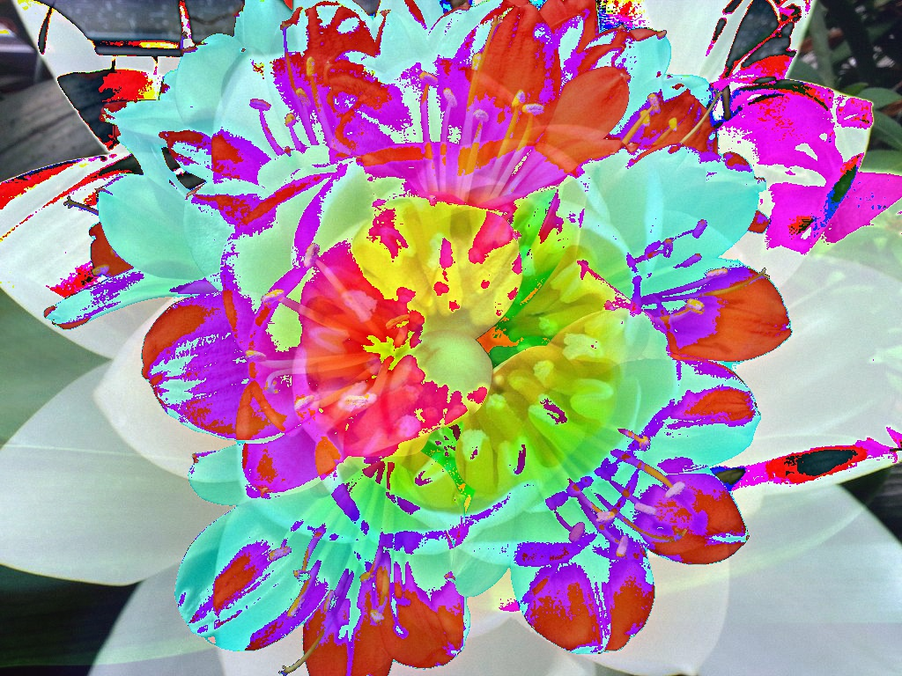
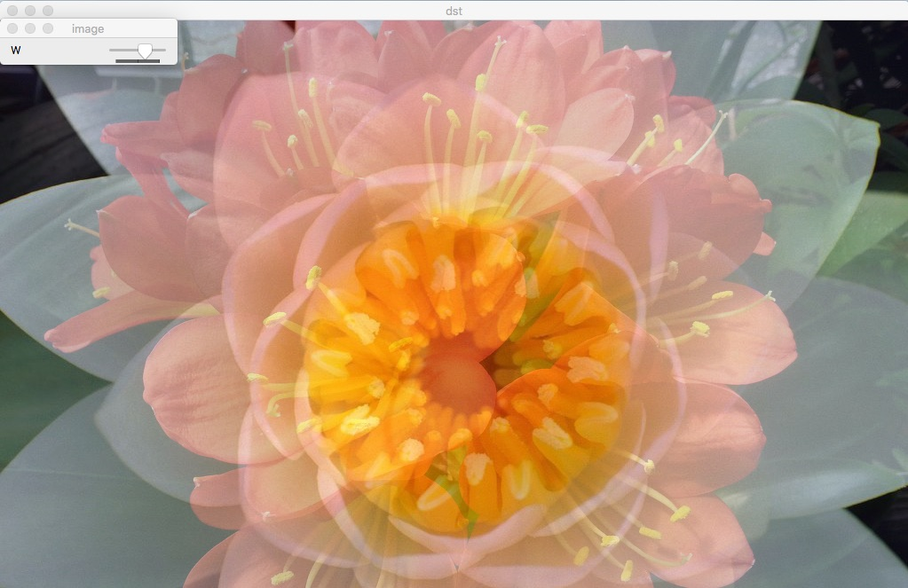

이미지 연산¶
Goal¶
- 이미지의 더하기, 빼기, 비트연산에 대해서 알 수 있다.
cv2.add(),cv2.addWdighted()함수에 대해서 알 수 있다.
이미지 더하기¶
이미지를 더하는 방법은 OpenCV의
cv2.add() 함수를 사용하는 방법과Numpy 연산, 즉 img1 + img2로 하는 방법이 있습니다. 둘다 더하는 것은 같지만 결과는 다르게 나타납니다.
OpenCV의
cv2.add() 는 Saturation 연산을 하고, Numpy는 modulo 연산을 합니다.Note
Saturation연산은 한계값을 정하고 그 값을 벗어나는 경우는 모두 특정 값으로 계산하는 방식 입니다.
이미지에서는 0이하는 모두 0, 255이상은 모두 255로 표현하는 것입니다.
modulo연산은 a와 b는 n으로 나눈 나머지 값이 같다라는 의미입니다.
시계를 예로 들면 2와 14는 12로 나눈 나머지가 2로 동일합니다. 이미지에서는 연산의 결과가 256보다 큰 경우는 256으로 나눈 나머지 값으로 결정을 합니다.
예제로 OpenCV와 Numpy의 결과가 어떻게 다른지 보겠습니다.

Original 1

Original 2

OpenCV Add

Numpy Add
이미지 Blending¶
이미지를 서로 합칠 때 가중치를 두어 합치는 방법입니다.
\[g(x) = (1 - \alpha)f_{0}(x) + \alpha f_{1}(x)\]
a 값이 0 -> 1로 변함에 따라서 이미지가 전환된다.
아래 예제는 trackbar의 값을 조정함에 따라서 이미지가 변환되는 예제입니다.
Sample Code
1 2 3 4 5 6 7 8 9 10 11 12 13 14 15 16 17 18 19 20 21 22 23 24 25 | #-*- coding:utf-8 -*-
import cv2
import numpy as np
img1 = cv2.imread('images/flower1.jpg')
img2 = cv2.imread('images/flower2.jpg')
def nothing(x):
pass
cv2.namedWindow('image')
cv2.createTrackbar('W', 'image', 0, 100, nothing)
while True:
w = cv2.getTrackbarPos('W','image')
dst = cv2.addWeighted(img1,float(100-w) * 0.01, img2,float(w) * 0.01,0)
cv2.imshow('dst', dst)
if cv2.waitKey(1) &0xFF == 27:
break;
cv2.destroyAllWindows()
|
Result

비트연산¶
비트연산은 AND, OR, NOT, XOR연산을 말한다. 비트연산은 이미지에서 특정 영역을 추출할 때 유용하게 사용된다. 예를 들면 이미지에서 바탕을 제거하고, 2개의 이미지를 합치는 경우입니다.
아래는 OpenCV Logo에서 바탕을 제거하고, 이미지에 추가하는 예제입니다.
Sample Code
1 2 3 4 5 6 7 8 9 10 11 12 13 14 15 16 17 18 19 20 21 22 23 24 25 26 27 28 29 30 31 32 33 34 35 36 37 | #-*- coding:utf-8 -*-
import cv2
import numpy as np
img1 = cv2.imread('images/logo.png')
img2 = cv2.imread('images/lena.jpg')
# 삽입할 이미지의 row, col, channel정보
rows, cols, channels = img1.shape
# 대상 이미지에서 삽입할 이미지의 영역을 추출
roi = img2[0:rows, 0:cols]
#mask를 만들기 위해서 img1을 gray로 변경후 binary image로 전환
#mask는 logo부분이 흰색(255), 바탕은 검은색(0)
#mask_inv는 logo부분이 검은색(0), 바탕은 흰색(255)
img2gray = cv2.cvtColor(img1, cv2.COLOR_BGR2GRAY)
ret, mask = cv2.threshold(img2gray, 10, 255, cv2.THRESH_BINARY)
mask_inv = cv2.bitwise_not(mask)
#bitwise_and 연산자는 둘다 0이 아닌 경우만 값을 통과 시킴.
#즉 mask가 검정색이 아닌 경우만 통과가 되기때문에 mask영역 이외는 모두 제거됨.
#아래 img1_fg의 경우는 bg가 제거 되고 fg(logo부분)만 남게 됨.
#img2_bg는 roi영역에서 logo부분이 제거되고 bg만 남게 됨.
img1_fg = cv2.bitwise_and(img1, img1, mask=mask)
img2_bg = cv2.bitwise_and(roi, roi, mask=mask_inv)
#2개의 이미지를 합치면 바탕은 제거되고 logo부분만 합쳐짐.
dst = cv2.add(img1_fg, img2_bg)
#합쳐진 이미지를 원본 이미지에 추가.
img2[0:rows, 0:cols] = dst
cv2.imshow('res', img2)
cv2.waitKey(0)
cv2.destroyAllWindows()
|
Result

참고로 이미지 처리시 많이 사용되는 cv2.threshold() 함수에 대해서 다음 장에서 알아보겠습니다.